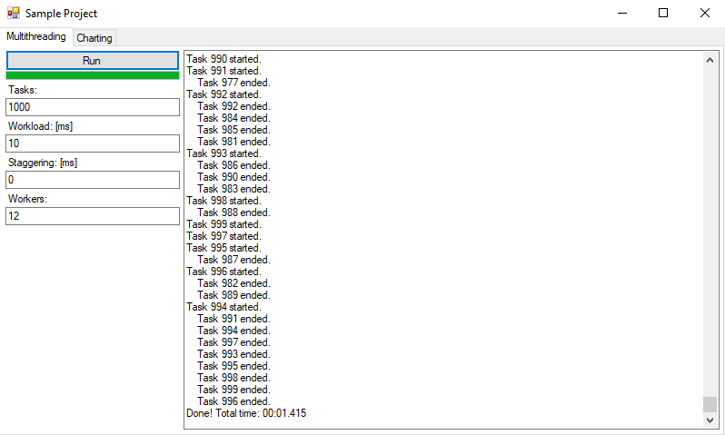

Kelly Criterion generalized
my bachelor thesis, 25. Apr, 2022

Scientific paper about optimizing placing bets.
In the paper I go into detail about how to optimize the long term returns of different kinds of bets. Selfwritten software for calculations & simulations is also provided.
WinForms
sample project, 28. Aug, 2021
C# sample project with examples about multithreading and charting
Circuit Cracker
selfmade puzzle game, 4. Aug , 2021

Circuit Cracker is a 2D puzzle game full of unique mechanics and brain teasers. There are pistons, lasers, conveyor belts, teleporters and a lot of logical circuits. The controls are simple and easy to get a hang of, so you will find yourself playing tricky levels in no time.
Currently the game is completely free to play and features more than 80 levels for you to twist your head around.